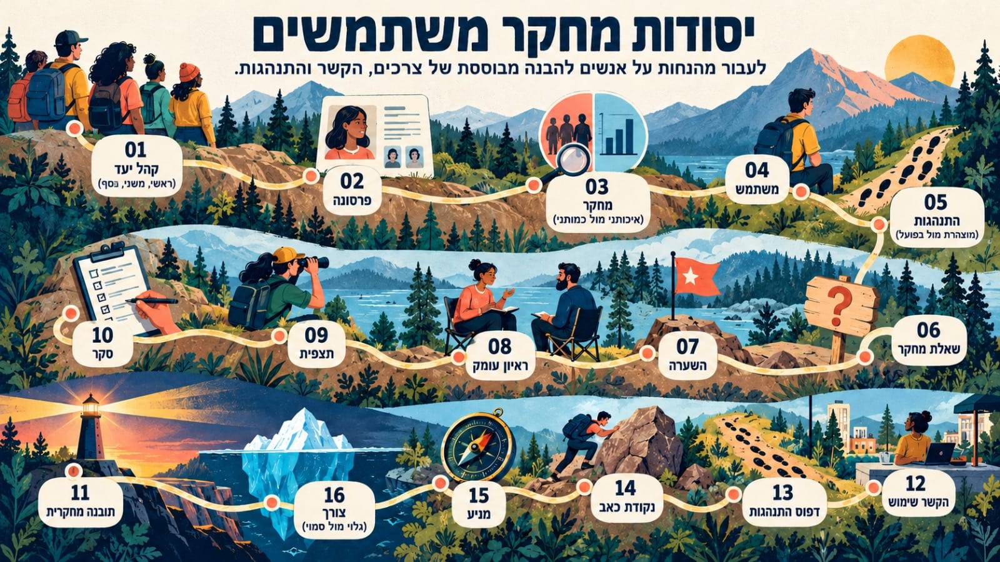
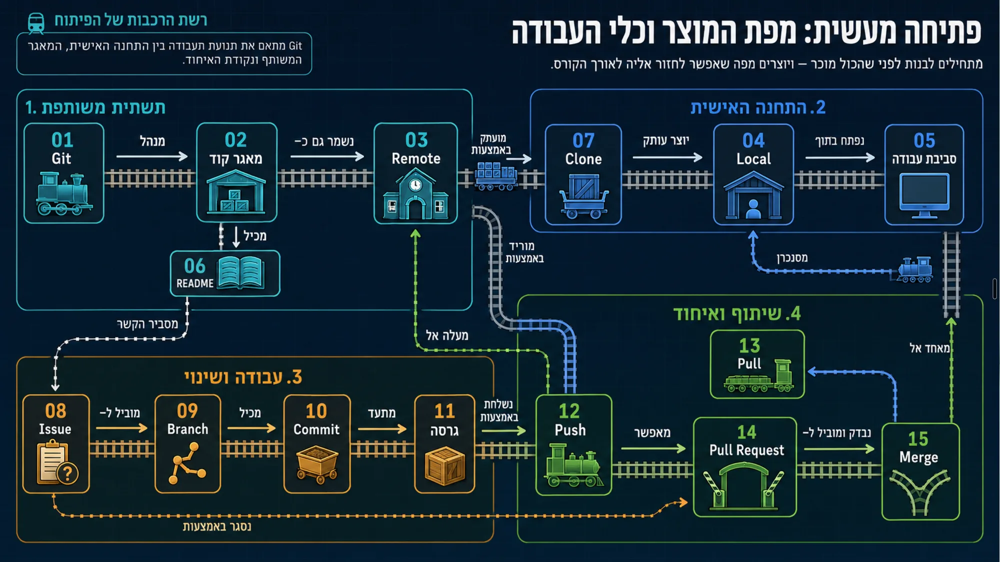
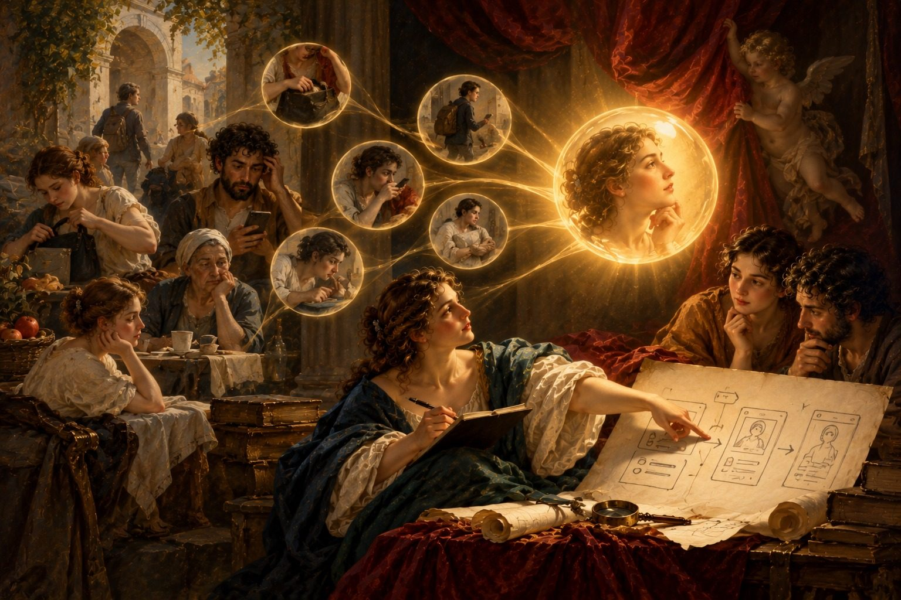
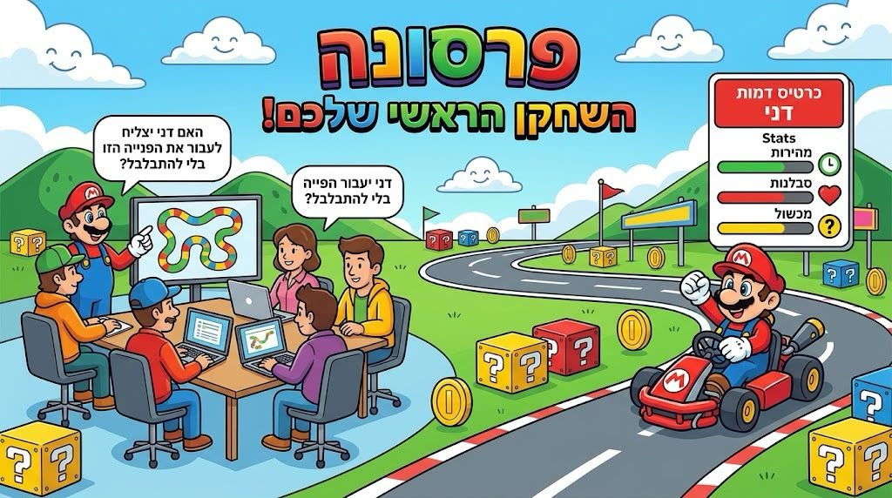
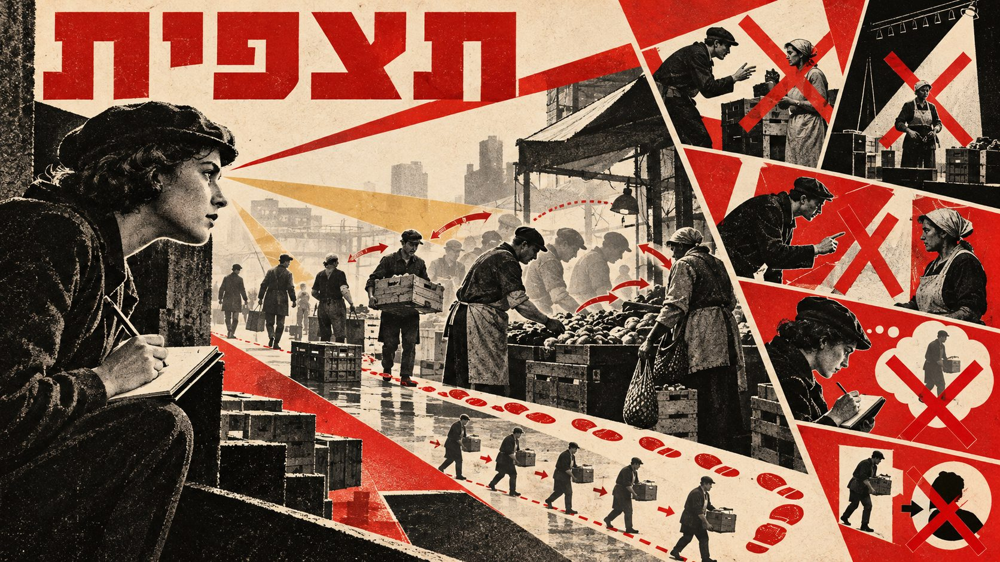
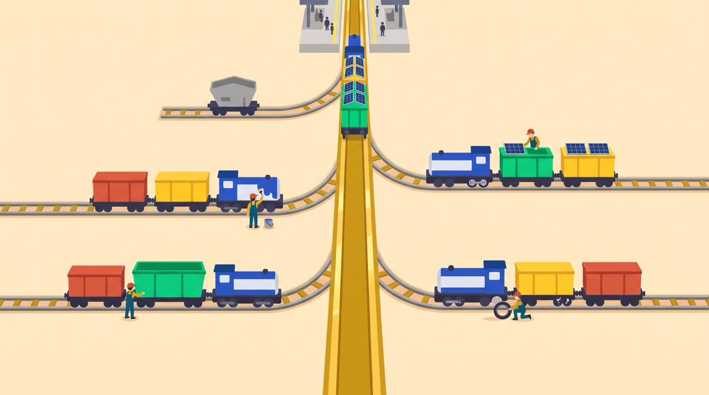
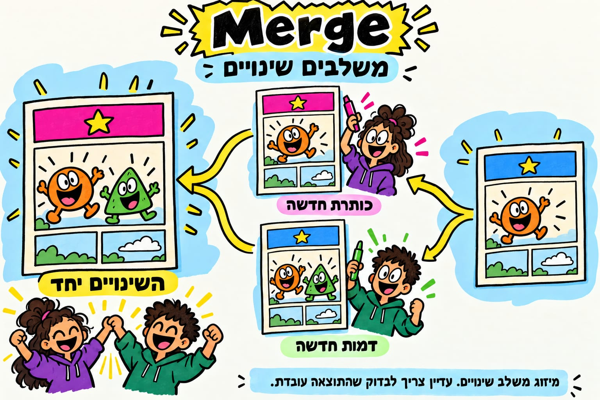
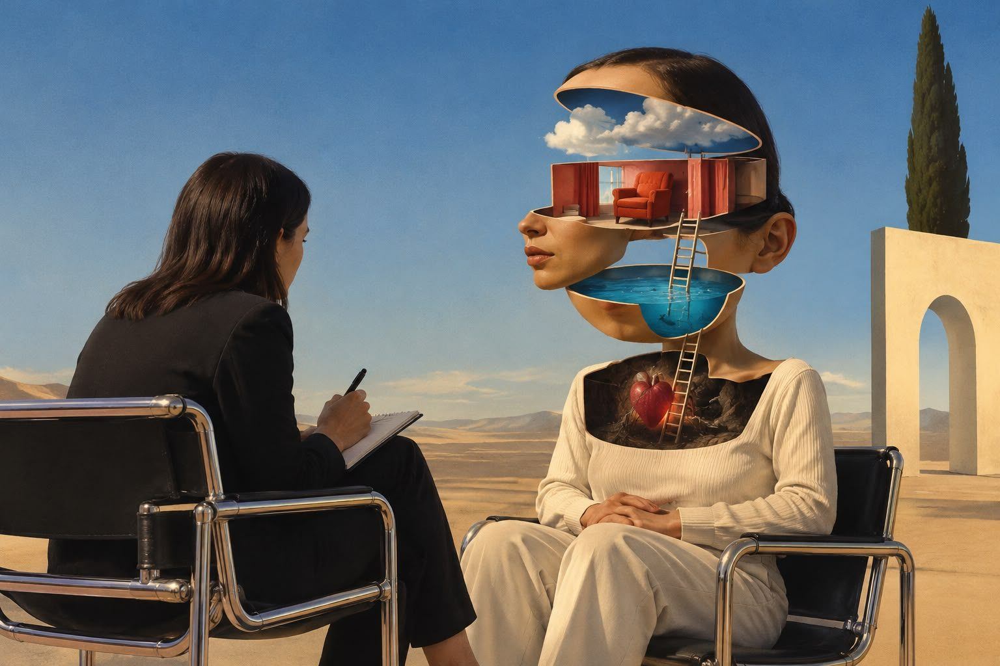
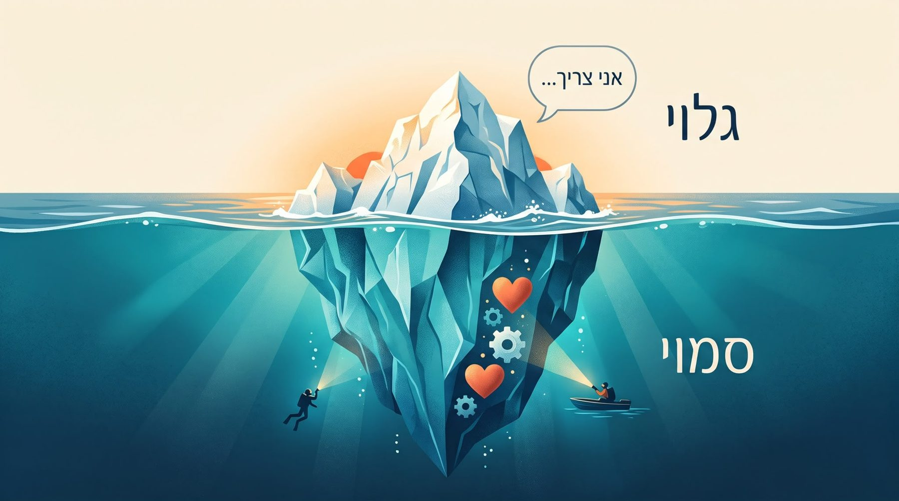

עיצוב החלטות · HIT ME
מה קורה בקורס
מבט מבחוץ על הקורס ״עיצוב החלטות״, לסטודנטים בשנה הרביעית בפקולטה לעיצוב, המכון הטכנולוגי חולון. הדף מתעדכן אחרי כל מפגש.
עודכן 28.10.2026, אחרי מפגש 2 · מרצה: ערן להב
31
ויזואלים למושגים שהסטודנטים יצרו בשיעורי הבית
4.7
ממוצע המשוב על מפגש 1, מתוך 5
על מה הקורס
הכיתה בונה יחד מוצר אמיתי אחד: אפליקציה לסטודנטים של המכון. בדרך, מעצבים לומדים לעבוד כמו צוות מוצר, עם מחקר, החלטות מנומקות, וכלי בינה מלאכותית.
- מוצר אחד, אחריות אישיתכל סטודנט אחראי לחלק ממוצר משותף, וכל החלטה צריכה נימוק וראיה.
- כלים של צוותי מוצרהסטודנטים עובדים במאגר קוד משותף ומגישים עבודות כמו בחברת תוכנה. כל 17 הסטודנטים הוזמנו למאגר.
- בינה מלאכותית ככלי עבודההסוכנים עוזרים לחקור, לנסח ולבנות. ההחלטות נשארות אצל הסטודנטים.
המפגשים
המפגש האחרון למעלה.
מפגש 2 · 28.10
מחקר משתמשים
המטרה: לעבור מ״נראה לי שסטודנטים...״ להבנה שמבוססת על ראיות.
- למידה משותפת של 16 מושגי מחקר. כל סטודנט הכין ויזואל למושג אחד מראש.
- תרגול מחקר על הכיתה עצמה: חצי מילאו סקר, חצי השתתפו בראיון קבוצתי, ואז התחלפו. בסוף סינתזה בעזרת בינה מלאכותית.
- ראיון חי בזום עם בוגרת המחלקה, היום מעצבת מוצר בחברת הייטק.
- חלוקה לארבע חוליות מחקר לשבוע הקרוב: תצפיות, ראיונות, סקר, ומחקר ברשת.

מפת מושגי המחקר שהכיתה למדה יחד.
מה גילינו על הכיתה (סקר בכיתה, 12 מתוך 17 ענו, בלי שמות)
- 11 מתוך 12 משתמשים בבינה מלאכותית כל יום. כל ה־12 יוצאים לפעמים מבולבלים מהעבודה איתה.
- 7 מתוך 12 עוד לא עשו אף ראיון או תצפית עם משתמשים.
- הכי בטוחים בעבודה עם אחרים (4.4 מתוך 5). הכי פחות בטוחים בנתונים ומדידה (2.1) ובמחקר משתמשים (2.4).
- הכי לא נוח להם להראות עבודה לא גמורה (1.7 מתוך 5).
שיעורי בית עד מפגש 3: מחקר בשטח בחוליות על סטודנטי המכון, דוח חוליה להצגה בכיתה, ורשומה ראשונה ביומן העיצוב האישי.
מפגש 1 · 21.10
פתיחה: הקורס, עבודת צוות וכלים משותפים
- ארוחת בוקר משותפת והיכרות.
- מבנה הקורס והציפיות: מוצר אחד משותף, אחריות אישית, תוצרים אמיתיים.
- למידה משותפת של 15 מושגים בעבודה במאגר קוד משותף. כל סטודנט הכין ויזואל והסביר אותו לכיתה.

מפת מושגי העבודה המשותפת, ממפגש הפתיחה.
משוב הסטודנטים (7 תשובות, ממוצע מתוך 5)
- הפעילויות עזרו ללמוד באופן פעיל: 5.0
- הרגישו בנוח לשאול ולהביע דעה: 4.7
- הרעיונות המרכזיים היו ברורים: 4.6
- ברור מה עושים עד המפגש הבא, והקצב התאים: 4.4
שיעורי בית: פתיחת חשבון, הצטרפות למאגר המשותף, ויזואל למושג מחקר, וראיון היכרות קולי עם סוכן בינה מלאכותית.
קולות מהכיתה
מתוך המשוב והראיון הקבוצתי. בלי שמות, ובניסוח מקוצר.
- הוויזואלים שהכנו למושגים, והחלוקה ביננו, עזרו להבין את התהליך כולו.משוב על מפגש 1
- הבנתי איך צוות עובד יחד על מוצר אמיתי: כל תפקיד נפרד, אבל כולם מדברים כל הזמן.משוב על מפגש 1
- אל תחליטי כלום. תשאלי אותי. מי שמחליט בסוף זה אני.ראיון קבוצתי, מפגש 2: מה אומרים לבינה המלאכותית לפני שמתחילים
- אפשר לבנות דברים לבד, גם בלי לדעת לתכנת.ראיון קבוצתי, מפגש 2
מה הסטודנטים יצרו
חלק מהוויזואלים שהסטודנטים הכינו כשיעורי בית, כל אחד למושג אחד. התמונות נוצרו בעזרת בינה מלאכותית, ואין בהן סטודנטים.

תובנה מחקרית

פרסונה
נקודת כאב

תצפית

ענף עבודה

מיזוג

ראיון עומק

צורך
כל הוויזואלים, משני המפגשים: מפות המושגים
מה אני לומד כמרצה
תובנות ראשונות מהתחקיר אחרי כל מפגש. אלה התרשמויות, ונבדוק אותן מול המשוב.
עובד, ונשמור
- פתיחה חברתית עם ארוחת בוקר.
- חזרה מהזיכרון על מושגים מהמפגש הקודם.
- למידה דרך מפת מושגים שהסטודנטים בונים בעצמם.
- תרגול מעשי בכיתה, והפסקות מסודרות.
משנים
- תכננו יותר תוכן ממה שאפשר להספיק. במפגש הבא פחות תוכן ויותר זמן עבודה.
- לא כולם היו מוכנים טכנית לעבודה במאגר. הכנו מדריך צעד אחר צעד.
- מודדים התקדמות לפי תוצרים קטנים וברורים, לא לפי תחושה.
מה הלאה
מפגש 3 · 4.11
החוליות מציגות את ממצאי המחקר הראשון על סטודנטי המכון, והכיתה מתחלקת לצוותים הקבועים של הקורס.
על הדף הזה. הדף נועד לצוות המכון והפקולטה. אין בו שמות סטודנטים, אין ציטוטים מזוהים, ואין נתונים על סטודנט מסוים. מספרים מוצגים רק כסיכום של כל הכיתה.
הדף לא מופיע במנועי חיפוש. נא לא להעביר את הקישור הלאה בלי לשאול.